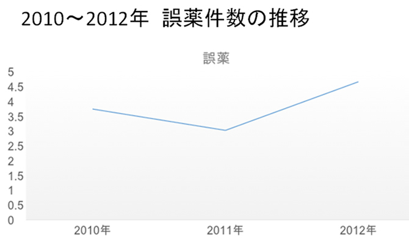
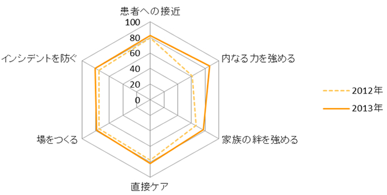
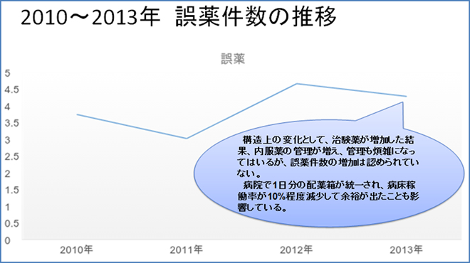

看護ケアの質評価・改善システム 一般社団法人 日本看護質評価 改善機構


一般社団法人 日本看護質評価
改善機構 代表理事 上泉 和子
Copyright ©2015 JINQI All Rights Reserved
質改善例紹介
＜誤薬インシデント対策にコンサルテーションを取り入れて＞
兵庫県立がんセンター A病棟
＊この内容は第18回日本看護管理学会学術集会（愛媛、2014）で発表されました。
看護QI評価の結果、誤薬が増え、過程の内なる力の得点が低くなっていた。そこで、看護QI研究会(当時）にコンサルテーションを依頼した。

＊ここでいう誤薬とは、患者に与薬されるべき薬剤と異なる薬剤・量・経路で与薬されたこと､および与薬されるべき薬剤・量が与薬されなかったことを示す。与薬される前に誤りに気づき、事前に誤薬を回避できたものは含まない。
共に分析した結果、以下のようなことが指摘された
共に分析した結果、以下のようなことが指摘された
- ・看護師は残薬チェックのために仕事が煩雑になっている
- ・病棟では、外泊時、0レベルの誤薬もインシデント報告を行い件数に含めている
- ・看護師は誤薬チェックに追われており、看護ができないと感じている
コンサルタントから以下のフィードバックを受けた
- ・内服抗がん剤の誤薬に対しては、対策が必要
- ・残薬チェックによって業務が煩雑になっており、簡素化する必要がある
- ・残薬チェックの有効性は文献によって否定されている
- ・外泊中の誤薬など看護師の責任外で起こるインシデントやリスク0の誤薬に対する考え方を整理して不全感につながらないようにする。
助言を受け2013年以下のことに取り組んだ
外泊中の誤薬など看護師の責任外で起こるインシデントやリスク0の誤薬に対する考え方を変えた
- ⇒リスク0は 看護師が早く気付けて良かった行動ととらえる
- ⇒外泊中の誤薬は 看護師に起因していない
成果
外泊中の誤薬など看護師の責任外で起こるインシデントやリスク0の誤薬に対する考え方を変えた
- ・過程の得点が向上した。

- ・誤薬はわずかであるが減少した。

利用者の声
アンケート調査結果
2006年度調査実施施設（病棟）からの評価結果（リコメンデーション）報告書に 対する反応（アンケート調査）は以下の通りでした。
利用者の声
今後、本システムをご利用いただいた方々からの“声”を掲載させていただきます。ご意見、ご感想等ございましたら、日本看護質評価改善機構までご連絡ください。
質改善例紹介
看護の質と経営管理
日本看護質評価改善機構研究班
2017年12月22日
看護の質と経営管理
真鍋雅史
日本看護質評価改善機構では、看護ケアの質評価・改善システムを運用していますが、同時に、より効果的な質改善に向けた研究活動を行っています。個別事例による検討だけでなく、全体的なデータを用いた統計的な分析によって、改善に向けた新たな視点を得ることができます。ここでは研究利用にご同意頂いた対象者様のデータを用いた進行中の研究の一部をご紹介したいと思います。
看護の質のOutcome（成果）に対しては、Process（過程）やStructure（構造）が影響してきます。そのような中で、看護の経営管理に関するような指標は、どのように成果に影響するのでしょうか。そこで、インシデント発生率と病床当たりの看護師数との間にどのような関係があるかを検証してみました。結果の概要は表１に示します。
表1：インシデント発生率と病床当たり看護師数の統計的関係
| 転倒 | 転落 | 褥瘡 | 院内感染 | 誤薬 | |
| 病床あたり看護師数 | 負** | 負 | 正*** | 正*** | 正*** |
*は10%水準で、**は5%水準で***は1%水準で有意であることを示す。
これを見ると、病床当たり看護師数を増加させると転倒発生率は有意に押し下げる関係があるのに対して、褥瘡、院内感染、誤薬については、看護師数の増加が発生率を引き上げてしまいます。なお、転倒については、今回の分析モデルでは統計的に意味のある結果は得られていません。このような結果をどのように解釈すべきでしょうか。
ここで重要なことは、相関関係と因果関係は違うということです。病床あたり看護師数が多い病棟は、重症度が高い病棟であると考えられます。そのような病棟の患者は、歩くことが困難な例も多いでしょう。結果として、そのような病棟は転倒発生率が低いと考えられます。ここで言えることは、インシデント発生率を正しく分析するためには、重症度によってインシデント発生率をコントロールすることが重要だということです。そこで2017年度からは、それぞれの病棟ごとに担送、護送、独歩の状況の入力をお願いしています。得られたデータに基づいて、分析モデルをさらに改善していきたいと考えています。